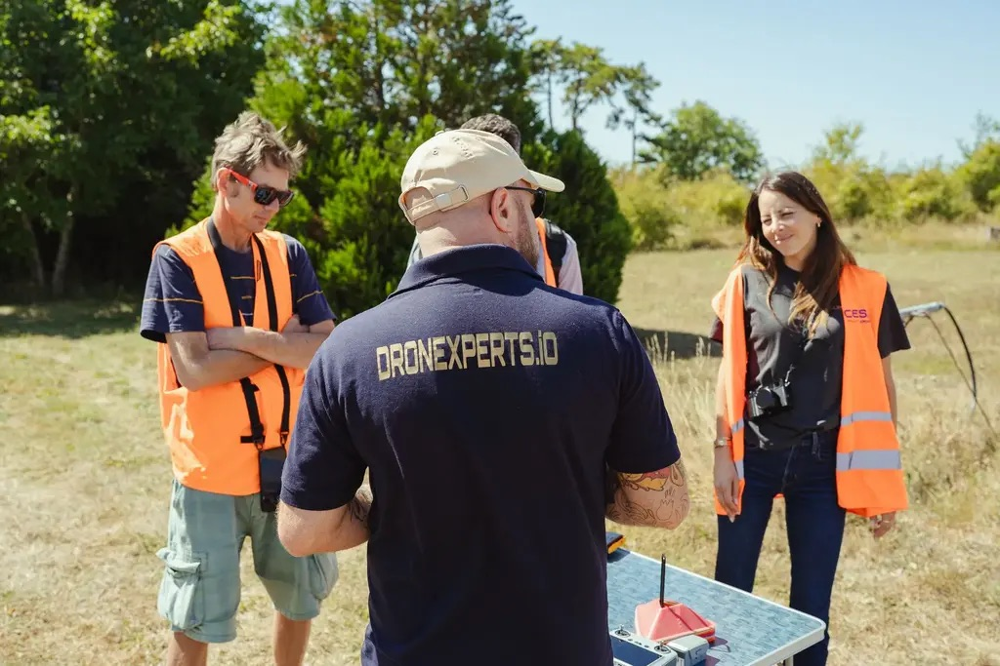
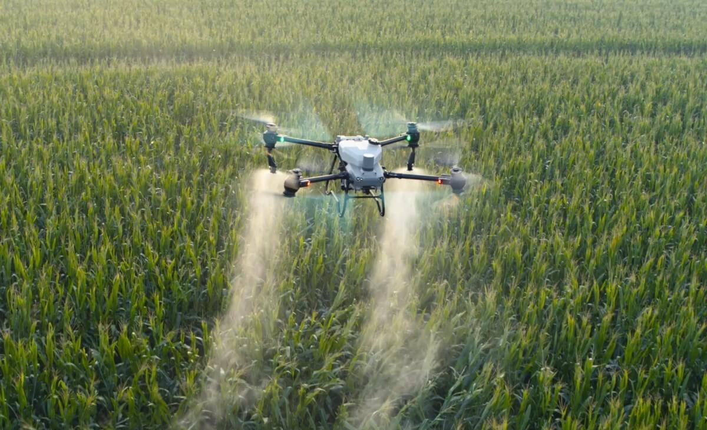
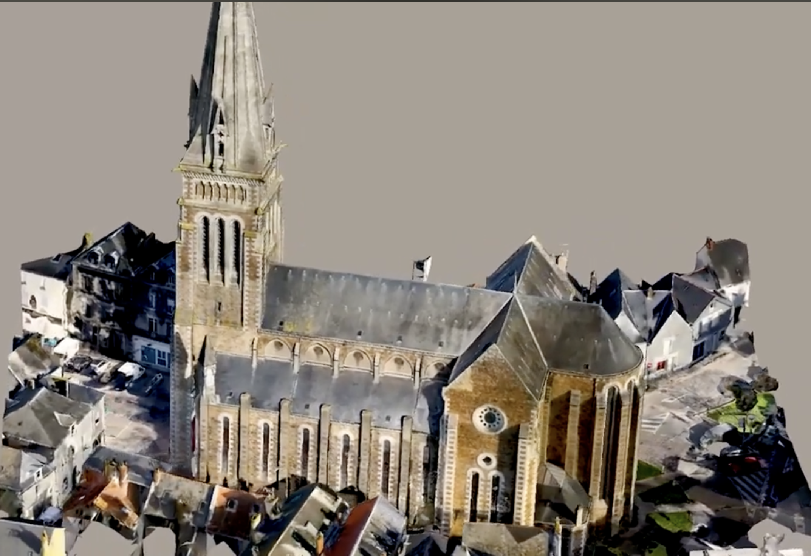
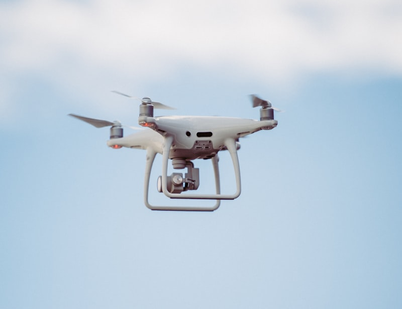
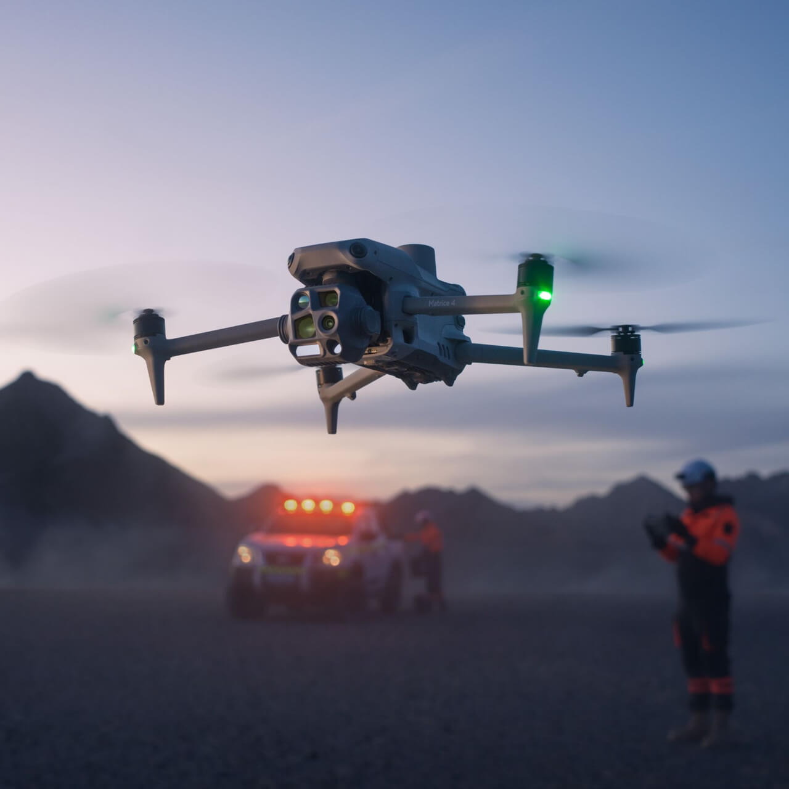
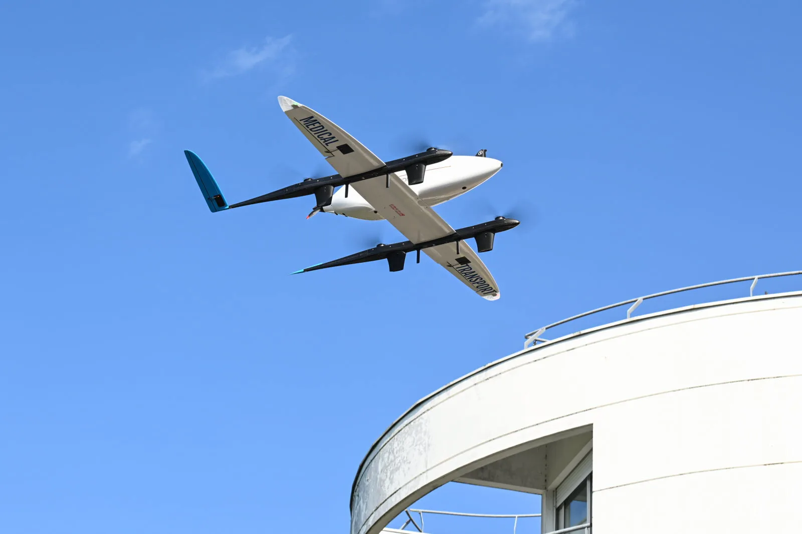
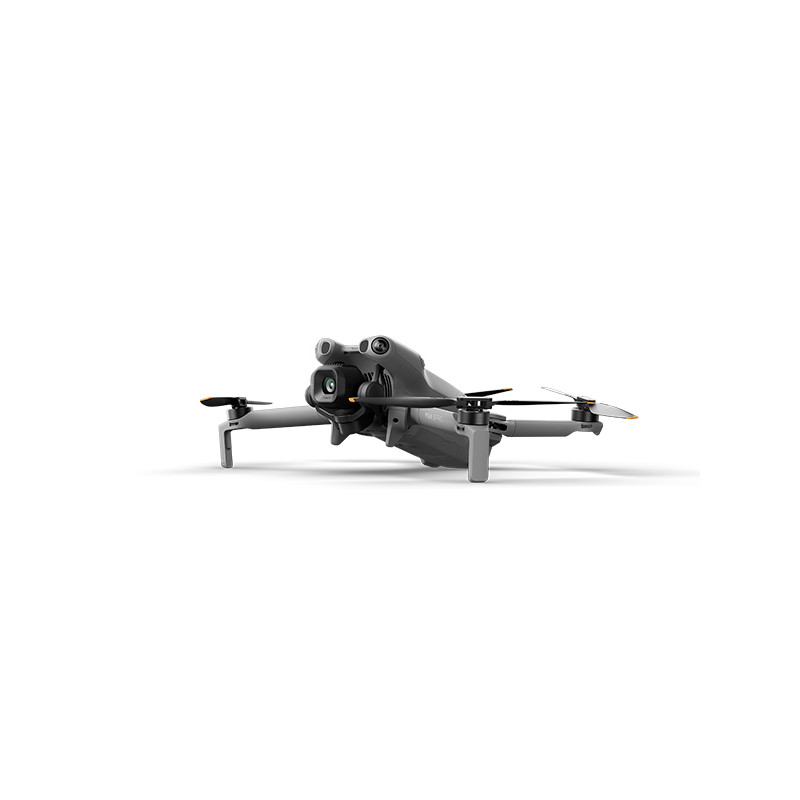
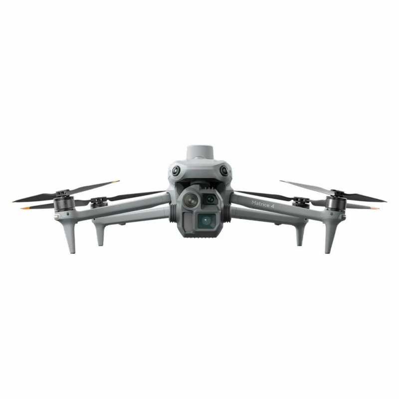
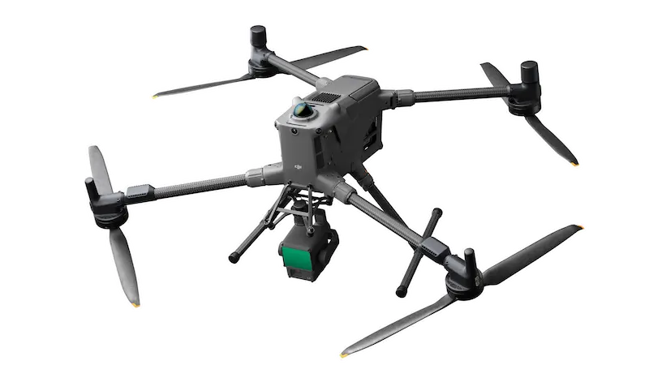

Présentation personnelle
Qui êtes-vous ? D'où venez-vous ?
Jour 1 Matin — Fondamentaux
Référentiel RS6982 — 3 jours / 24hFaisons connaissance, découvrez votre centre de formation et les objectifs des 3 jours à venir.
Qui êtes-vous ? D'où venez-vous ?
Quel est votre métier actuel ou votre projet professionnel ?
Avez-vous déjà piloté ? Avez-vous passé la formation A1/A3 ?
Qu'attendez-vous de cette formation ? Quels sont vos objectifs ?
▶ Voir la vidéo de présentation du centre

Assurer la sécurité lors de tous vos vols et atteindre le niveau exigé par la DGAC/EASA.
Lecture des cartes aéronautiques, analyse des risques et gestion de l'espace aérien.
AlphaTango, DroneKeeper, Géoportail et logiciels de pilotage professionnel.
QCM théorique, vol de contrôle et entretien oral pour valider vos compétences.
Découvrez les nombreux secteurs d'application du drone professionnel.

▶ Inspection Pont de Normandie · ▶ Modélisation Château de Beynes

▶ Inspection industrielle thermique · ▶ Inspection pylône télécom

▶ Modélisation 3D immobilière Paris · ▶ Mise en valeur immobilière



Les règles européennes et françaises encadrant l'exploitation des drones civils.
📄 Guide DSAC — Catégorie Ouverte (PDF)
Vol en vue directe (VLOS) obligatoire. Hauteur max 120 m. Drones < 25 kg. Pas d'autorisation préalable (sauf dans certains cas en France depuis le 01/01/2026).
Scénarios STS-01 / STS-02, PDRA. Vol BVLOS possible. Déclaration ou autorisation requise. MANEX obligatoire.
Transport de personnes, marchandises dangereuses. Certification EASA du drone et de l'exploitant.

DJI Mini 5 Pro — C0/C1 < 900 g

DJI Matrice 4E — C2 < 4 kg

Drone C3/C4 — < 25 kg
| Cat. | Classes | Masse | Distance / Survol | Agglo public | Formation |
|---|---|---|---|---|---|
| A1 | C0, C1 | < 900 g | Survol isolé toléré | Oui (J-10) | A1/A3 en ligne |
| A2 | C2 | < 4 kg | 30 m (5 m basse vitesse) | Oui (J-10) | A1/A3 + A2 (BAPD) |
| A3 | C3, C4 | < 25 kg | 150 m zones résidentielles | Non | A1/A3 en ligne |
Mise à jour 01/01/2026
Arrêté du 23/12/2025 modifiant l'arrêté « espace » du 03/12/2020
Agglomération OACI (zone jaune) + buffer de 50 m horizontal, ou à moins de 150 m d'un rassemblement.
Le survol de rassemblements de personnes est strictement interdit en catégorie Ouverte, quelle que soit la classe du drone.
Règlement (UE) 2019/947
⚠️ 2 systèmes distincts — Un drone ≥ 800 g de classe C2 doit avoir les deux : signalement FR + Remote ID EU. Les formats sont incompatibles.
Ex : DJI Matrice 4E — 3,26 kg (FR ≥ 800 g ✓) — Classe C2 (Remote ID ✓) — Balise intégrée
Exemples de calcul ALOS :
Mini 4 Pro (CD ≈ 0,31 m) → ALOS ≈ 327 × 0,31 + 20 = 121 m
Mavic 3 (CD ≈ 0,40 m) → ALOS ≈ 327 × 0,40 + 20 = 151 m
Matrice 350 RTK (CD ≈ 1,00 m) → ALOS ≈ 327 × 1,00 + 20 = 347 m